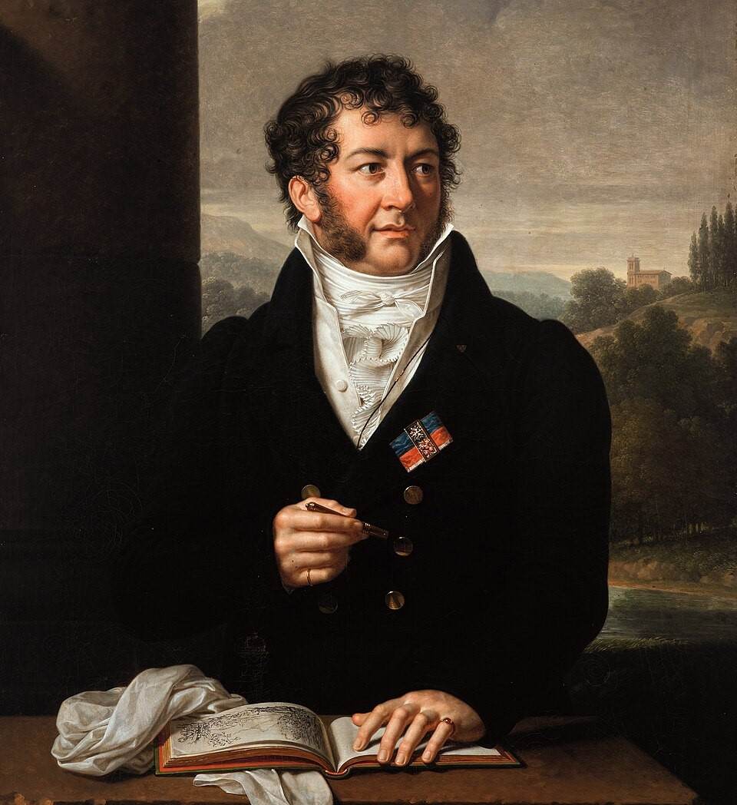
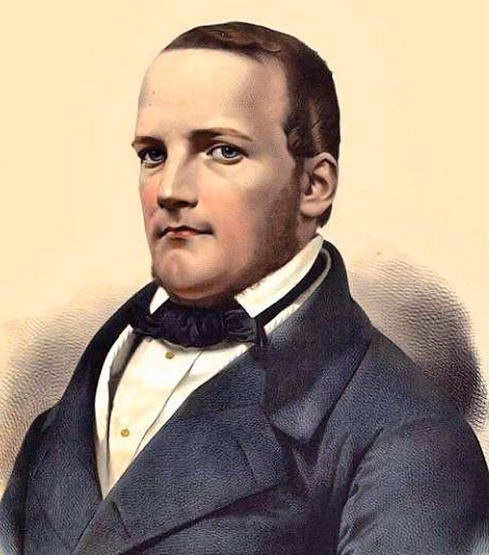
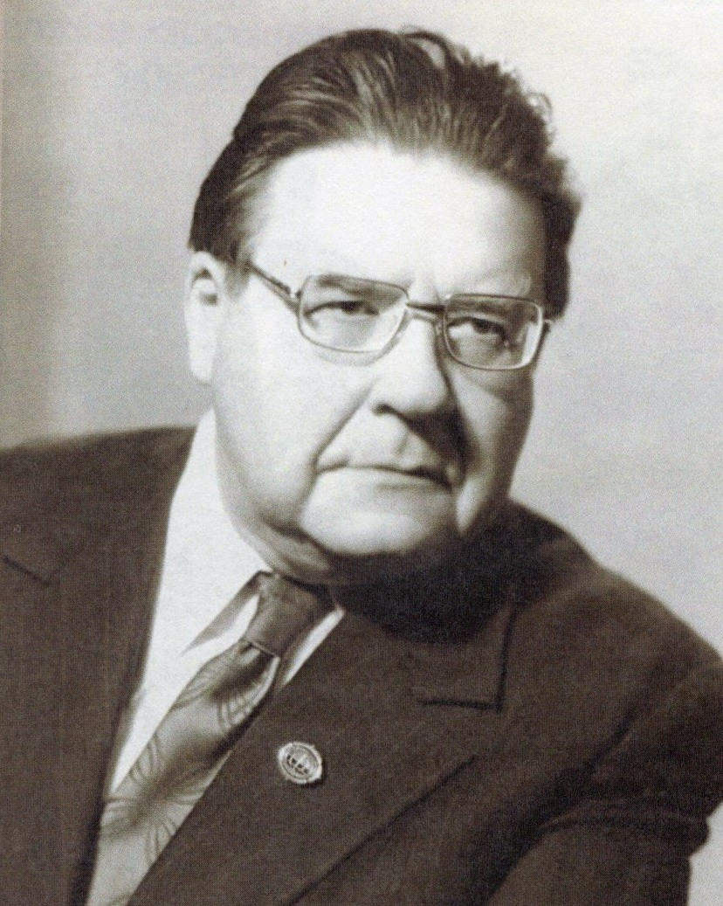
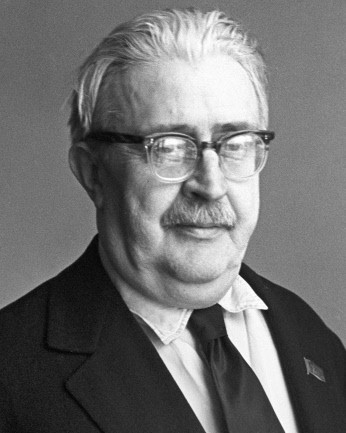
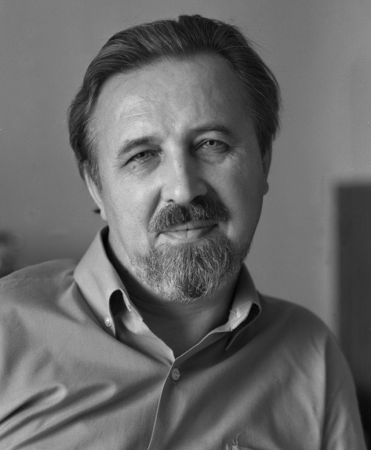
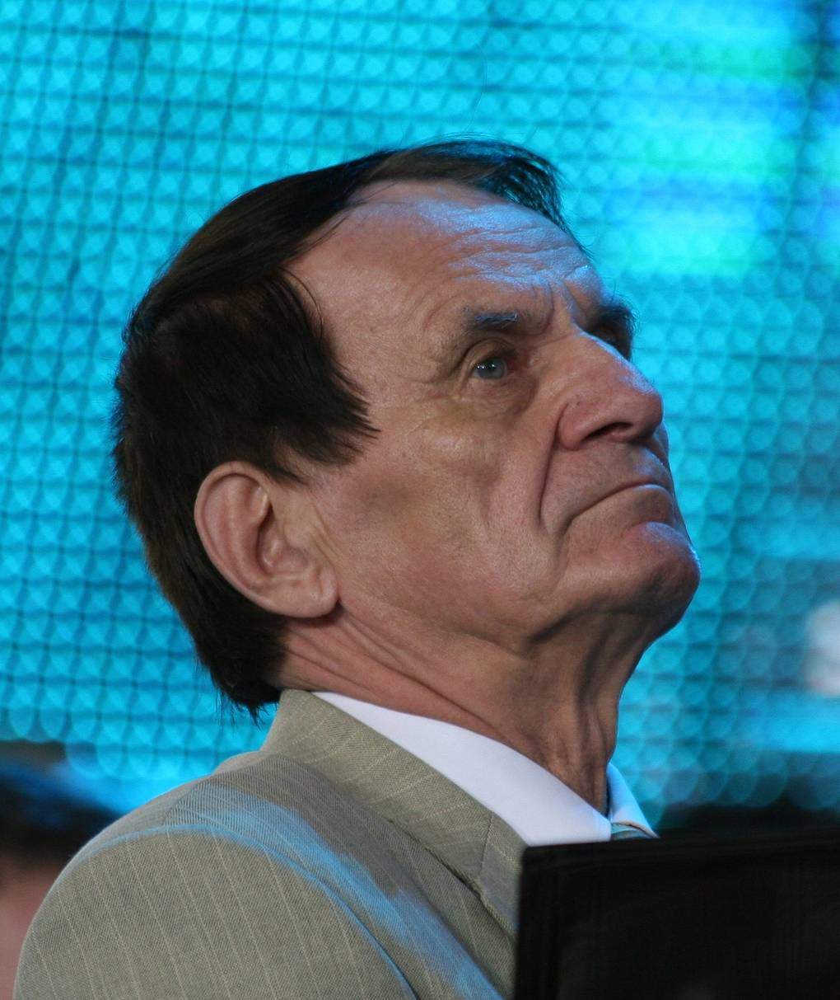

Музыка Беларуси XIX-XX вв.
Белорусская музыкальная культура складывалась на протяжении многих столетий. Её основой стали народные песни, обрядовые мелодии и инструментальные наигрыши, которые веками жили в деревнях и передавались из уст в уста. Уже в IX-XIV веках вместе с христианством на белорусские земли приходит знаменный распев - одноголосное церковное пение, которое в местных условиях приобрело свои черты: строгость, возвышенность и торжественность. Школы знаменного пения сложились в Полоцке, Турове и Витебске. В XV-XVII веках, в эпоху Возрождения и Реформации, музыкальная культура становится разнообразнее: появляются канты, псалмы, партесное многоголосие, издаются первые нотные сборники - Берестейский и Несвижский канционалы.
XVIII век стал временем расцвета светской музыки. При магнатских дворах Радзивиллов, Огинских, Тизенгаузенов, Сапегов создаются оперные и балетные труппы, оркестры и капеллы. В Несвиже, Слониме, Гродно, Шклове работают итальянские, французские, чешские и немецкие музыканты, а рядом с ними - местные крепостные и вольные исполнители. В XIX веке в белорусских губерниях развивается музыкальное образование, открываются пансионы и школы, а в Минске в 1852 году ставится первая национальная опера - «Сялянка» Винцента Дунина-Марцинкевича и Станислава Монюшко. XX век приносит профессиональную композиторскую школу, оперу и симфонию, а вместе с ними - имена, которые определили лицо белорусской музыки на десятилетия вперёд.
От народной песни до симфонии
Путь белорусской музыки - это движение от фольклора к профессиональному искусству. Народная песня долгое время оставалась главной формой музыкальной жизни: она звучала на свадьбах, в поле, на календарных праздниках. Первые записи народных мелодий появились в XIX веке благодаря этнографам, а композиторы начали использовать их в своих произведениях. В XVIII веке при магнатских дворах возникли крепостные оркестры и капеллы, где учили местных музыкантов, а в XIX веке открылись музыкальные классы и школы. В XX веке белорусская музыка вышла на академический уровень: появились оперы, балеты, симфонии, концерты. Композиторы, о которых пойдёт речь, работали в разных жанрах и эпохах, но всех их объединяет одно - опора на белорусскую народную традицию и стремление говорить о своём времени.

Михаил Клеофас Огинский
1765-1833 · композитор, дипломат, политический деятель
Михаил Клеофас Огинский родился в 1765 году в Гузуве под Варшавой, но большую часть жизни провёл в имении Залесье на территории современной Беларуси. Он происходил из древнего магнатского рода, участвовал в восстании Костюшко, был дипломатом и сенатором. В историю он вошёл прежде всего как композитор - автор полонезов, мазурок и вальсов. В Залесье Огинский создал один из первых в регионе симфонических оркестров, а его дом стал центром музыкальной жизни. Его музыка сочетает европейскую классическую традицию с национальными мотивами, а полонез «Прощание с Родиной» стал символом польско-белорусского культурного наследия.
Связь с историей. Творчество Огинского неразрывно связано с одним из самых драматичных периодов в истории белорусских земель - эпохой разделов Речи Посполитой. В 1772, 1793 и 1795 годах территория Великого княжества Литовского, в состав которого входили белорусские земли, была разделена между Российской империей, Пруссией и Австрией. Огинский был активным участником восстания 1794 года под руководством Тадеуша Костюшко, которое было направлено на восстановление Речи Посполитой. После поражения восстания он был вынужден покинуть родину и жить в эмиграции. Именно в эти годы был написан полонез «Прощание с Родиной» - музыкальное выражение тоски по утраченному государству и надежды на его возрождение. В XIX веке, когда белорусские земли окончательно вошли в состав Российской империи, музыка Огинского стала символом национального самосознания и памяти о былом величии. Она звучала в салонах шляхты, на концертах и в домашнем музицировании, напоминая о том, что белорусские земли имеют свою историю и культуру, отличные от имперских.
Послушать:

Станислав Монюшко
1819-1872 · композитор, автор первой национальной оперы
Станислав Монюшко родился в 1819 году в имении Убель под Минском. Он происходил из старинного белорусского рода, получил музыкальное образование в Варшаве и Берлине, а большую часть жизни работал в Вильне и Варшаве. Монюшко известен прежде всего как автор оперы «Галька», которая стала классикой польской музыки. Но его связь с Беларусью не ограничивается местом рождения: он написал музыку к опере «Сялянка» на либретто Винцента Дунина-Марцинкевича. Эта опера, поставленная в 1852 году в Минске, стала важным событием в истории белорусского театра и музыки. Монюшко также писал романсы, песни, кантаты и оркестровые произведения. Его музыка сочетает европейскую классическую традицию с народными мелодиями, которые он слышал с детства.
Связь с историей. «Сялянка» создавалась в период, когда белорусские земли находились в составе Российской империи, а белорусский язык и культура подвергались давлению. После восстания 1830-1831 годов царское правительство взяло курс на русификацию края: в 1840 году Николай I запретил употребление слова «белорус», а территория Беларуси стала называться Северо-Западным краем России. В этих условиях постановка оперы на белорусском языке стала не просто художественным событием, а актом национального самосознания. Премьера состоялась 9 февраля 1852 года в Минске, в городском театре. Спектакль шёл на белорусском и польском языках, в нём звучали народные песни и танцы. Уже на следующий день после премьеры поступил устный, а затем и письменный приказ о запрете спектаклей на «простонародном языке». Несмотря на запрет, «Сялянку» неоднократно ставили в Минске, Бобруйске, Слуцке, Несвиже и Глуске - но уже не в театральных помещениях, а в частных домах. Опера Монюшко и Дунина-Марцинкевича стала первым произведением, в котором белорусский язык и белорусская тема вышли на оперную сцену, и это определило её место в истории национальной культуры.
Послушать:

Анатолий Богатырёв
1913-2003 · композитор, педагог, председатель Союза композиторов БССР
Анатолий Богатырёв родился в 1913 году. Он учился в Белорусском музыкальном техникуме у Николая Аладова, а затем в 1937 году окончил его по классу композиции у профессора Василия Золотарёва. С 1934 года Богатырёв совмещал учёбу с работой концертмейстера в Белорусском государственном театре оперы и балета. В 1938 году он был избран председателем правления Союза композиторов БССР и занимал эту должность много лет. Его опера «В пущах Полесья» (1939), созданная по повести Якуба Коласа «Дрыгва», была удостоена Сталинской премии. Богатырёв воспитал почти всех знаменитых белорусских композиторов второй половины XX века: Евгения Глебова, Игоря Лученка, Юрия Семеняко, Дмитрия Смольского, Сергея Кортеса и многих других.
Связь с историей. Опера «В пущах Полесья» создавалась в предвоенные годы, когда тема народной борьбы и национального единства была особенно актуальна. В 1939 году, после воссоединения Западной Беларуси с БССР, перед белорусской культурой встала задача осмысления общей исторической судьбы разделённого народа. Постановка оперы в 1940 году на сцене Большого театра в Москве стала частью Декады белорусского искусства - масштабного мероприятия, которое должно было продемонстрировать достижения республики. В годы Великой Отечественной войны Богатырёв остался в Минске, пережил оккупацию, а после освобождения продолжил работу по восстановлению музыкальной жизни республики. Его педагогическая деятельность пришлась на послевоенные десятилетия, когда формировалась новая белорусская композиторская школа. Среди его учеников - композиторы, которые определили лицо белорусской музыки во второй половине XX века. Богатырёв не только писал музыку, но и создавал систему подготовки национальных кадров, без которой невозможно было бы появление таких фигур, как Глебов или Лученок.
Послушать:

Евгений Тикоцкий
1893-1970 · композитор, автор опер «Михась Подгорный» и «Алеся»
Евгений Тикоцкий родился в 1893 году в Петербурге, но большую часть жизни связал с Беларусью. Он получил образование в Петербургской консерватории и начал творческую деятельность ещё до революции. В 1930-е годы переехал в Минск, где стал одним из ведущих композиторов республики. Тикоцкий известен прежде всего как автор опер «Михась Подгорный» и «Алеся», которые шли в Государственном театре оперы и балета БССР в довоенное и послевоенное время. Он также писал симфонии, кантаты, песни и музыку к театральным спектаклям. В 1955 году ему было присвоено звание народного артиста СССР. Тикоцкий внёс значительный вклад в развитие белорусской оперы и симфонической музыки.
Связь с историей. Оперы Тикоцкого создавались в период становления советской белорусской культуры, когда перед композиторами стояла задача соединить национальную традицию с новыми идеологическими требованиями. В 1930-е годы в СССР утвердился метод социалистического реализма, который предписывал искусству быть понятным народу и отражать социалистические идеалы. Белорусские композиторы должны были создавать произведения, которые, с одной стороны, опирались на национальный фольклор, а с другой - соответствовали официальной идеологии. Оперы Тикоцкого стали примером такого синтеза: в них звучали белорусские народные мелодии, но сюжеты были построены вокруг классовой борьбы и революционных событий. После Великой Отечественной войны Тикоцкий продолжил работу, создавая произведения, посвящённые памяти погибших и восстановлению разрушенной страны. Его музыка стала частью послевоенной культурной жизни Беларуси, когда страна залечивала раны и строила новое общество.
Послушать:

Евгений Глебов
1929-2000 · композитор, автор балета «Альпийская баллада»
Евгений Глебов родился в 1929 году, учился у Анатолия Богатырёва. Он работал в разных жанрах: писал оперы, балеты, симфонии, концерты, музыку к театральным спектаклям и кинофильмам. Его балет «Альпийская баллада» по повести Василя Быкова стал одним из самых известных произведений белорусской музыки. Глебов также написал музыку к фильму «Иди и смотри» Элема Климова - одному из самых сильных кинематографических свидетельств о войне. Его творчество отличается глубоким психологизмом, вниманием к человеческим переживаниям и умением сочетать классическую традицию с современным музыкальным языком. Глебов воспитал несколько поколений белорусских композиторов и оставил после себя огромное наследие.
Связь с историей. Музыка Глебова к фильмам о войне стала частью национальной памяти о трагических событиях XX века. Его балет «Альпийская баллада» - это размышление о любви и смерти на фоне войны, о том, как человек сохраняет человеческое достоинство в нечеловеческих условиях. Фильм «Иди и смотри» Элема Климова, к которому Глебов написал музыку, был снят в 1985 году - в год 40-летия Победы. Картина стала одним из самых сильных кинематографических свидетельств о войне и была включена ЮНЕСКО в список 100 лучших фильмов мира. Музыка Глебова в этом фильме не просто сопровождает изображение, а становится частью эмоционального воздействия, усиливая трагизм происходящего. Творчество Глебова пришлось на послевоенные десятилетия, когда белорусское общество осмысляло опыт войны и формировало национальную идентичность. Его произведения стали частью этого процесса, помогая новым поколениям понять, что такое война и какой ценой досталась победа.
Послушать:

Игорь Лученок
1938-2018 · композитор, автор эстрадных песен и симфоний
Игорь Лученок родился в 1938 году, учился у Анатолия Богатырёва. Он написал музыку ко многим фильмам, театральным спектаклям и эстрадным песням, которые стали популярны далеко за пределами Беларуси. Его песни исполняли такие певцы, как Иосиф Кобзон, Лев Лещенко, София Ротару и другие. Лученок также писал симфонии, концерты и камерные произведения. Его музыка отличается мелодичностью, лиризмом и умением передать настроение. Он был удостоен множества наград, включая звание народного артиста Беларуси. Лученок внёс значительный вклад в развитие белорусской музыкальной культуры и воспитал не одно поколение музыкантов.
Связь с историей. Песни Лученка стали частью советской эстрады 1970-1980-х годов, они звучали на радио и телевидении, отражая настроения и ценности своего времени. В этот период белорусская музыкальная культура достигла значительного расцвета: композиторы активно работали в разных жанрах, от эстрадной песни до симфонии. Лученок был одним из тех, кто соединил академическую музыку с эстрадой, создав произведения, которые были доступны широкой аудитории, но при этом сохраняли высокий профессиональный уровень. Его песни исполнялись на всесоюзных конкурсах и фестивалях, становились лауреатами премий. В 1980-е годы, когда в стране начались перемены, связанные с перестройкой, музыка Лученка оставалась востребованной, поскольку говорила о вечных ценностях: любви, родине, человеческих отношениях. После распада СССР Лученок продолжил работать в Беларуси, оставаясь одним из самых уважаемых композиторов страны. Его творчество - это мост между советской и постсоветской эпохами, между академической и популярной музыкой.
Послушать: